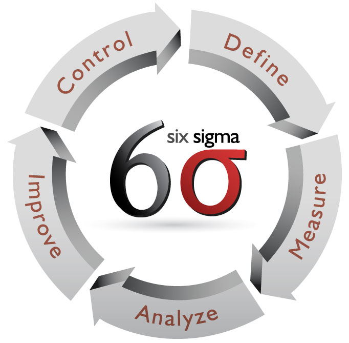

Resume/Work History
A brief work history
Having held a wide variety of jobs, I have learned that I can do just about anything I put my mind to. I am highly adaptable, trainable, a good team member as well as knowing when to take the lead on group projects. I have a good attention to detail and I take my time to get things done right the first time, every time.
A sampling of the skills I have obtained over the years
- Six Sigma Green Belt trained

- 2+ Years of sit-down forklift operation
- Excellent pattern recognition skills
- Very Proficient in computers and computer aplications
My education
Graduated: 2004 Field of Study: General Education
Graduated: 2010 Field of Study: Manufacturing Technologies
Graduated: 2018 Field of Study: Mobile Application Development
Recent Work History
Featured below is approximately my last 5-year work experience. It is primarily labor work, and some of it doesn’t last very long. This is not a reflection of my work ethic. They just end when they were meant to.
Express Professionals
(Temp-to-hire/Contracted work, 4/2018-Present)
- Customer Service oriented approaches
- Working as a Valet at Kansas City International Airport
- Drive customer vehicle to and from storage area with utmost care
Staffmark
(Agency Associate/Contracted work, 08/2017-02/2018)
- Processed orders for customers
- Constructed racking
- Performed all tasks that were requested of me.
Adecco
(Temp-to-hire/Contracted work, 03/2017-08/2017)
- Performed PIT operations in a receiving department
- Assisted AP Teachers from around the nation, grade High School students work books
- Prepared shipments to be returned to vendors
Ford Motor Company
(Temp-to-hire/assembly, 03/2016-12/2016)
- Added and or modified parts onto units coming down the assembly line
- Performed light cleaning duties
Staffmark/OHL
(Forklift operator, 08/2012-03/2016)
- Utilized a Sit-Down PIT to move product to and from locations within the warehouse and to shipping/receiving areas
- Performed special projects which includes some lead-like duties
- Performed light paperwork, involving product within the warehouse and signing in and out of drivers that visit the warehouse
Download my resume for your reference.
My contact information can be found within my resume